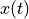
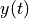
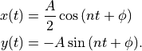
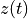
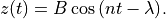

Natural Motion Circumnavigation Details¶
A Natural Motion Circumnavigation (NMC) is an orbit for one platform that is specified relative to another platform. One platform, called the target or chief, executing a circular orbit becomes the center point of a relative orbit by another platform, called the chaser. When the chaser is given the correct state, over the course of an orbit for the chief, the chaser will execute an orbit that, from the perspective of the chief, will circumnavigate the chief.
Once the chaser attains one of a number of orbital states, the NMC will proceed without the need for any subsequent expenditure of propellant. This feature is what makes this a natural motion circumnavigation.
Description of the Relative Motion¶
In a frame of reference fixed to the chief, the motion of a chaser executing NMC decomposes into a motion in the orbital plane of the chief, and a motion in the out-of-plane direction.
The in-plane relative motion is an ellipse with a semi-major-axis aligned with the local horizontal direction (also know as in-track). The semi-minor axis is aligned in the radial direction and has half the magnitude of the semi-major-axis. The period of the relative orbit is equal to the orbital period of the chief.
An example NMC with a semi-major-axis of 30 m. The radial direction is up, and the in-track direction is to the right. The platform ‘chaser’ is pictured at the point of insertion into the NMC, and it will orbit the chief counterclockwise.¶
The out-of-plane relative motion is that of a harmonic oscillator with a period equal to the orbital period of the chief. Because the periods of the in-plane and out-of-plane motions are equal, the resulting relative orbit is closed, and appears to tilt the ellipse out of the orbital plane of the chief.
The NMC from the previous image, but with an out-of-plane motion. The grid shows the in-track and cross-track distances. The relative orbit still appears elliptical, but is tilted out of the radial, in-track plane.¶
Entering into the NMC¶
The initial state of the chaser is not constrained in any way, so the Natural Motion Circumnavigation maneuver first performs a rendezvous-like maneuver to transfer the chaser into an orbit that intersects the NMC. Once the chaser travels to the point of intersection with the NMC orbit, a point called the insertion point, another maneuver is executed to bring the chaser onto the NMC orbit. The rendezvous portion of the NMC maneuver carries over many of the same parameters as a Rendezvous maneuver.
Options Describing the NMC Relative Orbit¶
The relative motion in the plane is described by the following expressions, where
 is the relative radial position of the chaser,  is the
relative in-track position of the chaser,  is the mean motion of the
chief’s orbit,
is the mean motion of the
chief’s orbit,  is the semi-major-axis of the relative orbit, and
is the semi-major-axis of the relative orbit, and
 is a phase angle:
is a phase angle:

Note that the sign in front of is chosen so that increases in that
phase angle correspond to an advance around the relative orbit in the same sense
as the chaser proceeds through the NMC.
The out-of-plane motion is described similarly, where  is the relative
cross-track position of the chaser,  is an amplitude, and
is an amplitude, and  is a phase.
is a phase.

The Natural Motion Circumnavigation maneuver has
two parameters each for the in-plane and out-of-plane motion,
orbit_size,
orbit_phase,
out_of_plane_amplitude,
and out_of_plane_phase,
which correspond to , , , and ,
respectively.